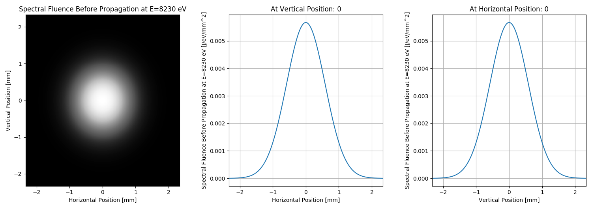
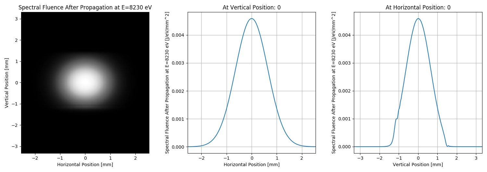

Note
Click here to download the full example code
SRW Example #14¶
Problem¶
Simulating propagation of a Gaussian X-ray beam through a simple optical scheme containing C(400) dual-crystal monochromator
Example Solution¶
- 
- 
Out:
SRWLIB Python Example # 14:
!!!!!Under testing!!!!!
Simulating propagation of a Gaussian X-ray beam through a simple optical scheme containing C(400) dual-crystal monochromator
1st crystal orientation:
t= [0, 0.8446667037503511, 0.5352925924907952] s= [1.0, -0.0, 0.0] n= [0, 0.5352925924907952, -0.8446667037503511]
1st crystal output beam frame:
ex= [1.0, 0.0, 0.0] ey= [0.0, -0.4269236808489669, -0.9042876592823599] ez= [0.0, 0.9042876592823599, -0.4269236808489669]
Beam frame transformation matrix (from the begining of opt. scheme to output of current element):
[1.0, 0.0, 0.0]
[0.0, -0.4269236808489669, -0.9042876592823599]
[0.0, 0.9042876592823599, -0.4269236808489669]
2nd crystal orientation:
t= [2.9260116737068116e-07, -0.8446667037503005, 0.5352925924907952] s= [-0.99999999999994, -3.464102066193935e-07, 0.0] n= [1.8543081756656714e-07, -0.5352925924907631, -0.8446667037503511]
2nd crystal output beam frame:
ex= [0.9999999999999399, 3.464102066193934e-07, -0.0] ey= [1.478907204936026e-07, -0.4269236808489413, 0.9042876592823599] ez= [3.1325447489536995e-07, -0.9042876592823057, -0.4269236808489669]
Beam frame transformation matrix (from the begining of opt. scheme to output of current element):
[0.9999999999999399, 3.464102066193934e-07, 0.0]
[-3.464102066193934e-07, 0.9999999999999399, 0.0]
[-2.6469779601696886e-23, 5.551115123125783e-17, 1.0]
After the two crystals of DCM, the transformation matrix should be close to the unit matrix.
Calculating initial wavefront...done in 0 s
Extracting initial spectral fluence in frequency domain and saving it to files...done in 0 s
Starting propagation of monochromatic wavefront
Propagating wavefront...done in 3 s
Extracting propagated spectral fluence in frequency domain and saving it to files...done in 0 s
Plotting the results (blocks script execution; close all graph windows to proceed) ... done
from __future__ import print_function #Python 2.7 compatibility
from srwpy.srwlib import *
from srwpy.uti_math import *
from srwpy.uti_plot import * #required for plotting
import os
import time
print('SRWLIB Python Example # 14:')
print('!!!!!Under testing!!!!!')
print('Simulating propagation of a Gaussian X-ray beam through a simple optical scheme containing C(400) dual-crystal monochromator')
#**********************Auxiliary Functions
def ExtractAndSavePulseData(_wfr, _fn_prefix, _ec=0, _xc=0, _yc=0):
"""Extract and save to file radiation pulse characteristics"""
arIIvsT = None; arIvsT = None; arFvsXY = None; arIvsXY = None; #arPhvsXY = None; arIvsX = None; arIvsY = None
meshIvsT = None; meshIvsXY = None
sFirstDep = 'Photon Energy'
sFirstDepUnit = 'eV'
sResCharI = 'Spectral Energy'
sResChar = 'Spectral Fluence'
sResUnit = 'J/eV'
sEorT = 'e'
if(_wfr.presFT == 1): #Time domain
sFirstDep = 'Time'
sFirstDepUnit = 's'
sResCharI = 'Power'
sResChar = 'Power Density'
sResUnit = 'W'
sEorT = 't'
suf = '_' + sEorT
mesh0 = _wfr.mesh
if(mesh0.ne > 1):
#Vs Photon Energy or Time, Integrated over X&Y
arIIvsT = array('f', [0]*mesh0.ne) #array to take 1D data
srwl.CalcIntFromElecField(arIIvsT, _wfr, 6, 2, 0, _ec, _xc, _yc) #extracts power vs t or spec. energy vs e
meshIvsT = deepcopy(mesh0)
meshIvsT.nx = 1; meshIvsT.xStart = _xc; meshIvsT.xFin = _xc
meshIvsT.ny = 1; meshIvsT.yStart = _yc; meshIvsT.yFin = _yc
srwl_uti_save_intens_ascii(arIIvsT, meshIvsT, _fn_prefix + suf + 'i' + suf + '.dat',
_arLabels=[sFirstDep, 'Horizontal Position', 'Vertical Position', sResCharI],
_arUnits=[sFirstDepUnit, 'm', 'm', sResUnit])
#Vs Photon Energy or Time, Cut
arIvsT = array('f', [0]*mesh0.ne) #array to take 1D data
srwl.CalcIntFromElecField(arIvsT, _wfr, 6, 0, 0, _ec, _xc, _yc) #extracts power density vs t or spec. fluence vs e
#srwl.CalcIntFromElecField(arIvsT, _wfr, 0, 5, 0, _ec, _xc, _yc) #extracts Re(Ex) vs t or vs e
#srwl.CalcIntFromElecField(arIvsT, _wfr, 0, 6, 0, _ec, _xc, _yc) #extracts Im(Ex) vs t or vs e
srwl_uti_save_intens_ascii(arIvsT, meshIvsT, _fn_prefix + suf + suf + '.dat',
_arLabels=[sFirstDep, 'Horizontal Position', 'Vertical Position', sResChar],
_arUnits=[sFirstDepUnit, 'm', 'm', sResUnit + '/mm^2'])
if(_wfr.presFT == 0):
#Fluence vs X&Y (calculate it only in Frequency domain, because it is the same in both domains)
arFvsXY = array('f', [0]*mesh0.nx*mesh0.ny) #array to take 2D data
srwl.CalcIntFromElecField(arFvsXY, _wfr, 6, 7, 3, _ec, _xc, _yc)
meshIvsXY = deepcopy(mesh0)
meshIvsXY.ne = 1; meshIvsXY.eStart = _ec; meshIvsXY.eFin = _ec
srwl_uti_save_intens_ascii(arFvsXY, meshIvsXY, _fn_prefix + '_fluence_xy.dat',
_arLabels=[sFirstDep, 'Horizontal Position', 'Vertical Position', 'Fluence'],
_arUnits=[sFirstDepUnit, 'm', 'm', 'J/mm^2'])
#Vs X&Y
arIvsXY = array('f', [0]*mesh0.nx*mesh0.ny) #"flat" array to take 2D data
srwl.CalcIntFromElecField(arIvsXY, _wfr, 6, 0, 3, _ec, _xc, _yc) #extracts intensity
#srwl.CalcIntFromElecField(arIvsXY, _wfr, 0, 5, 3, _ec, _xc, _yc) #extracts Re(Ex)
#srwl.CalcIntFromElecField(arIvsXY, _wfr, 0, 6, 3, _ec, _xc, _yc) #extracts Im(Ex)
if(meshIvsXY == None):
meshIvsXY = deepcopy(mesh0)
meshIvsXY.ne = 1; meshIvsXY.eStart = _ec; meshIvsXY.eFin = _ec
srwl_uti_save_intens_ascii(arIvsXY, meshIvsXY, _fn_prefix + suf + '_xy.dat',
_arLabels=[sFirstDep, 'Horizontal Position', 'Vertical Position', sResChar],
_arUnits=[sFirstDepUnit, 'm', 'm', sResUnit + '/mm^2'])
#Phase vs X&Y
#arPhvsXY = array('d', [0]*mesh0.nx*mesh0.ny) #"flat" array to take 2D phase data (note it should be 'd')
#srwl.CalcIntFromElecField(arPhvsXY, _wfr, 0, 4, 3, _ec, _xc, _yc) #extracts radiation phase
#srwl_uti_save_intens_ascii(arPhvsXY, meshIvsXY, _fn_prefix + suf + '_ph_xy.dat',
# _arLabels=[sFirstDep, 'Horizontal Position', 'Vertical Position', 'Phase'],
# _arUnits=[sFirstDepUnit, 'm', 'm', 'rad'])
#Vs X
#arIvsX = array('f', [0]*mesh0.nx) #array to take 1D data
#srwl.CalcIntFromElecField(arIvsX, _wfr, 6, 0, 1, _ec, _xc, _yc) #extracts power density or spec. fluence vs x
#meshIvsX = deepcopy(mesh0)
#meshIvsX.ne = 1; meshIvsX.eStart = _ec; meshIvsX.eFin = _ec
#meshIvsX.ny = 1; meshIvsX.yStart = _yc; meshIvsX.yFin = _yc
#srwl_uti_save_intens_ascii(arIvsX, meshIvsX, _fn_prefix + suf + '_x.dat',
# _arLabels=[sFirstDep, 'Horizontal Position', 'Vertical Position', sResChar],
# _arUnits=[sFirstDepUnit, 'm', 'm', sResUnit + '/mm^2'])
#Vs Y
#arIvsY = array('f', [0]*mesh0.ny) #array to take 1D data
#srwl.CalcIntFromElecField(arIvsY, _wfr, 6, 0, 2, _ec, _xc, _yc) #extracts power density or spec. fluence vs y
#meshIvsY = deepcopy(mesh0)
#meshIvsY.ne = 1; meshIvsY.eStart = _ec; meshIvsY.eFin = _ec
#meshIvsY.nx = 1; meshIvsY.xStart = _xc; meshIvsY.xFin = _xc
#srwl_uti_save_intens_ascii(arIvsY, meshIvsY, os.path.join(os.getcwd(), _fn_prefix + suf + '_y.dat'),
# _arLabels=[sFirstDep, 'Horizontal Position', 'Vertical Position', sResChar],
# _arUnits=[sFirstDepUnit, 'm', 'm', sResUnit + '/mm^2'])
return [[arIIvsT, arIvsT, arFvsXY, arIvsXY], [meshIvsT, meshIvsXY]]
#**********************Input Parameters and Structures
#***********Folder and Data File Names
strDataFolderName = 'data_example_14' #data sub-folder name
strIntOutFileNameCore0 = 'ex14_res_int_in' #file name core for initial radiation intensity data
strPhOutFileNameCore0 = 'ex14_res_ph_in' #file name core for initial radiation phase data
strIntOutFileNameCore1 = 'ex14_res_int_pr' #file name core for propagated radiation intensity data
strPhOutFileNameCore1 = 'ex14_res_ph_pr' #file name core for propagated radiation phase data
#***********Gaussian Beam structure
GsnBm = SRWLGsnBm()
GsnBm.x = 0 #Transverse Positions of Gaussian Beam Center at Waist [m]
GsnBm.y = 0
GsnBm.z = 0 #Longitudinal Position of Waist [m]
GsnBm.xp = 0 #Average Angles of Gaussian Beam at Waist [rad]
GsnBm.yp = 0
GsnBm.avgPhotEn = 8230 #Photon Energy [eV]
GsnBm.pulseEn = 0.001 #Pulse Energy [J] - to be corrected
GsnBm.repRate = 1 #Rep. Rate [Hz] - to be corrected
GsnBm.polar = 1 #1- linear hoirizontal
#lambMdivFourPi = (1.23984186e-06/(4*3.1415926536))/GsnBm.avgPhotEn
constConvRad = 1.23984186e-06/(4*3.1415926536)
rmsAngDivAt8keV = 3.e-06 #1.e-06 #RMS divergence [rad] at 8 keV
GsnBm.sigX = constConvRad/(8000*rmsAngDivAt8keV) #Horiz. RMS size at Waist [m]
#print('RMS Source Size [m]:', GsnBm.sigX)
GsnBm.sigY = GsnBm.sigX #Vert. RMS size at Waist [m]
rmsAngDiv = constConvRad/(GsnBm.avgPhotEn*GsnBm.sigX) #RMS angular divergence [rad]
GsnBm.sigT = 10.e-15 #Pulse duration [s] (not used?)
GsnBm.mx = 0 #Transverse Gauss-Hermite Mode Orders
GsnBm.my = 0
#***********Wavefront structure
wfr = SRWLWfr()
doTimeDependent = False #Make True to do time-dependent calculation
if(doTimeDependent):
#Use this for Time-Dependent calculations:
wfr.allocate(50, 100, 100) #Numbers of points vs Photon Energy, Horizontal and Vertical Positions
wfr.presFT = 1 #presentation/domain: 0- frequency (photon energy), 1- time
wfr.mesh.eStart = -5.*GsnBm.sigT #Initial Time [s]
wfr.mesh.eFin = 5.*GsnBm.sigT #Final Time [s]
else:
#Use this for Steady-State calculations:
wfr.allocate(1, 100, 100) #Numbers of points vs Photon Energy (1), Horizontal and Vertical Positions (dummy)
wfr.presFT = 0 #Presentation/domain: 0- frequency (photon energy), 1- time
wfr.mesh.eStart = GsnBm.avgPhotEn #Initial Photon Energy [eV]
wfr.mesh.eFin = GsnBm.avgPhotEn #Final Photon Energy [eV]
wfr.mesh.zStart = 200 #Longitudinal Position [m] at which the initial Electric Field has to be calculated, i.e. the position of the first optical element
distSrc_Opt = wfr.mesh.zStart - GsnBm.z #Distance bw Source (waist) and first optical element (center)
horAp = 8*rmsAngDiv*distSrc_Opt #First Aperture size / "window" for simulations [m]
wfr.mesh.xStart = -0.5*horAp #Initial Horizontal Position [m]
wfr.mesh.xFin = 0.5*horAp #Final Horizontal Position [m]
vertAp = horAp
wfr.mesh.yStart = -0.5*vertAp #Initial Vertical Position [m]
wfr.mesh.yFin = 0.5*vertAp #Final Vertical Position [m]
wfr.avgPhotEn = GsnBm.avgPhotEn
wfr.unitElFld = 2 #Electric field units: 0- arbitrary, 1- sqrt(Phot/s/0.1%bw/mm^2), 2- sqrt(J/eV/mm^2) or sqrt(W/mm^2), depending on representation (freq. or time)
wfr.partBeam.partStatMom1.x = GsnBm.x #Some information about the source in the Wavefront structure
wfr.partBeam.partStatMom1.y = GsnBm.y
wfr.partBeam.partStatMom1.z = GsnBm.z
wfr.partBeam.partStatMom1.xp = GsnBm.xp
wfr.partBeam.partStatMom1.yp = GsnBm.yp
sampFactNxNyForProp = 0.5 #1.1 #Sampling factor for adjusting nx, ny in the initial wavefront (effective if > 0)
#***********Optical Elements and Propagation Parameters
#Sequence of Optical Elements:
# <1st Crystal of DCM>
# <2nd Crystal of DCM>
# <Drift>
#C(400) Crystal Constants:
dSpC400 = 0.89178 #Crystal reflecting planes d-spacing for C(400) crystal
#psi0rC400 = -0.17530e-04; psi0iC400 = 0.21089e-07 #Real and imaginary parts of 0-th Fourier component of crystal polarizability
psi0rC400 = -0.21732e-04; psi0iC400 = 0.28005e-07 #Real and imaginary parts of 0-th Fourier component of crystal polarizability
#psihrC400 = -0.45300e-05; psihiC400 = 0.20314E-07 #Real and imaginary parts of h-th Fourier component of crystal polarizability
psihrC400 = -0.54377e-05; psihiC400 = 0.25934E-07 #Real and imaginary parts of h-th Fourier component of crystal polarizability
psihbrC400 = psihrC400; psihbiC400 = psihiC400 #Real and imaginary parts of -h-th Fourier component of crystal polarizability
thickCryst = 10.e-03 #0.5e-03 #Thickness of each crystal [m]
angAsCryst = 0 #Asymmetry angle of each crystal [rad]
#1st Crystal:
opCr1 = SRWLOptCryst(_d_sp=dSpC400, _psi0r=psi0rC400,
_psi0i=psi0iC400, _psi_hr=psihrC400, _psi_hi=psihiC400, _psi_hbr=psihbrC400, _psi_hbi=psihbiC400,
_tc=thickCryst, _ang_as=angAsCryst)
#Find appropriate orientation of the 1st crystal and the corresponding output beam frame (in the incident beam frame):
orientDataCr1 = opCr1.find_orient(GsnBm.avgPhotEn)
orientCr1 = orientDataCr1[0] #1st crystal orientation
tCr1 = orientCr1[0]; nCr1 = orientCr1[2] # Tangential and Normal vectors to crystal surface
print(' 1st crystal orientation:'); print(' t=', tCr1, 's=', orientCr1[1], 'n=', nCr1)
#Set crystal orientation:
opCr1.set_orient(nCr1[0], nCr1[1], nCr1[2], tCr1[0], tCr1[1])
orientOutFrCr1 = orientDataCr1[1] #Orientation (coordinates of base vectors) of the output beam frame
rxCr1 = orientOutFrCr1[0]; ryCr1 = orientOutFrCr1[1]; rzCr1 = orientOutFrCr1[2] #Horizontal, Vertical and Longitudinal base vectors of the output beam frame
print(' 1st crystal output beam frame:'); print(' ex=', rxCr1, 'ey=', ryCr1, 'ez=', rzCr1)
TrM = [rxCr1, ryCr1, rzCr1] #Input/Output beam transformation matrix (for debugging)
print(' Beam frame transformation matrix (from the begining of opt. scheme to output of current element):')
uti_math.matr_print(TrM)
#2nd Crystal:
opCr2 = SRWLOptCryst(_d_sp=dSpC400, _psi0r=psi0rC400,
_psi0i=psi0iC400, _psi_hr=psihrC400, _psi_hi=psihiC400, _psi_hbr=psihbrC400, _psi_hbi=psihbiC400,
_tc=thickCryst, _ang_as=angAsCryst)
#Find appropriate orientation of the 2nd crystal and the corresponding output beam frame (in the incident beam frame):
orientDataCr2 = opCr2.find_orient(GsnBm.avgPhotEn, _ang_dif_pl=3.141593)
orientCr2 = orientDataCr2[0] #2nd crystal orientation
tCr2 = orientCr2[0]; nCr2 = orientCr2[2] # Tangential and Normal vectors to crystal surface
print(' 2nd crystal orientation:'); print(' t=', tCr2, 's=', orientCr2[1], 'n=', nCr2)
#Set crystal orientation:
opCr2.set_orient(nCr2[0], nCr2[1], nCr2[2], tCr2[0], tCr2[1])
orientOutFrCr2 = orientDataCr2[1] #Orientation (coordinates of base vectors) of the output beam frame
rxCr2 = orientOutFrCr2[0]; ryCr2 = orientOutFrCr2[1]; rzCr2 = orientOutFrCr2[2] #Horizontal, Vertical and Longitudinal base vectors of the output beam frame
print(' 2nd crystal output beam frame:'); print(' ex=', rxCr2, 'ey=', ryCr2, 'ez=', rzCr2)
TrM = uti_math.matr_prod(TrM, [rxCr2, ryCr2, rzCr2]) #Input/Output beam transformation matrix (for debugging)
print(' Beam frame transformation matrix (from the begining of opt. scheme to output of current element):')
uti_math.matr_print(TrM)
print(' After the two crystals of DCM, the transformation matrix should be close to the unit matrix.')
#Drift after DCM:
opDCM_Samp = SRWLOptD(20.)
#Wavefront Propagation Parameters:
#[0]: Auto-Resize (1) or not (0) Before propagation
#[1]: Auto-Resize (1) or not (0) After propagation
#[2]: Relative Precision for propagation with Auto-Resizing (1. is nominal)
#[3]: Allow (1) or not (0) for semi-analytical treatment of the quadratic (leading) phase terms at the propagation
#[4]: Do any Resizing on Fourier side, using FFT, (1) or not (0)
#[5]: Horizontal Range modification factor at Resizing (1. means no modification)
#[6]: Horizontal Resolution modification factor at Resizing
#[7]: Vertical Range modification factor at Resizing
#[8]: Vertical Resolution modification factor at Resizing
#[9]: Type of wavefront Shift before Resizing (not yet implemented)
#[10]: New Horizontal wavefront Center position after Shift (not yet implemented)
#[11]: New Vertical wavefront Center position after Shift (not yet implemented)
# [0][1][2] [3][4] [5] [6] [7] [8] [9][10][11]
prParInit = [0, 0, 1., 1, 0, 1., 2., 1.3, 2., 0, 0, 0]
prPar0 = [0, 0, 1., 1, 0, 1., 1., 1., 1., 0, 0, 0]
prParPost = [0, 0, 1., 0, 0, 1., 0.25, 1., 0.25, 0, 0, 0]
#NOTE: in this case of simulation, it can be enough to define the precision parameters only Before and After
#the propagation through the entire Beamline. However, if necessary, different propagation parameters can be specified
#for each optical element.
#The optimal values of propagation parameters may depend on photon energy and optical layout.
#"Beamline" - a sequenced Container of Optical Elements (together with the corresponding wavefront propagation parameters,
#and the "post-propagation" wavefront resizing parameters for better viewing):
optBL = SRWLOptC([opCr1, opCr2, opDCM_Samp],
[prParInit, prPar0, prPar0, prParPost])
#**********************Calculation
#***********Initial Gaussian Beam Wavefront
print('Calculating initial wavefront...', end='')
t0 = time.time()
srwl.CalcElecFieldGaussian(wfr, GsnBm, [sampFactNxNyForProp])
print('done in', round(time.time() - t0), 's')
arPI0vsT = None; arP0vsT = None; arP0vsXY = None; #arP0vsX = None; arP0vsY = None
meshP0vsT = None; meshP0vsXY = None; #meshP0vsX = None; meshP0vsY = None
tc0 = 0 #Time moment for power density cut [s]
if((wfr.mesh.ne > 1) and (wfr.presFT == 1)):
print('Extracting initial power (density) in time domain and saving to files...', end='')
t0 = time.time()
[[arPI0vsT, arP0vsT, arF0vsXYdummy, arP0vsXY], [meshP0vsT, meshP0vsXY]] = ExtractAndSavePulseData(wfr, os.path.join(os.getcwd(), strDataFolderName, strIntOutFileNameCore0), _ec=tc0)
print('done in', round(time.time() - t0), 's')
print('Resizing: increasing time range to improve resolution in frequency domain...', end='')
t0 = time.time()
srwl.ResizeElecField(wfr, 'f', [0, 35., 0.7])
print('done in', round(time.time() - t0), 's')
print('Switching from time to frequency domain...', end='')
t0 = time.time()
srwl.SetRepresElecField(wfr, 'f')
print('done in', round(time.time() - t0), 's')
print('Resizing: decreasing photon energy range to speed-up calculation and save memory...', end='')
t0 = time.time()
srwl.ResizeElecField(wfr, 'f', [0, 0.12, 1.])
print('done in', round(time.time() - t0), 's')
ec0 = wfr.avgPhotEn #Photon energy for spectral fluence cut [eV]
print('Extracting initial spectral fluence in frequency domain and saving it to files...', end='')
t0 = time.time()
[[arII0vsE, arI0vsE, arF0vsXY, arI0vsXY], [meshI0vsE, meshI0vsXY]] = ExtractAndSavePulseData(wfr, os.path.join(os.getcwd(), strDataFolderName, strIntOutFileNameCore0), _ec=ec0)
print('done in', round(time.time() - t0), 's')
#***********Wavefront Propagation
if(wfr.mesh.ne > 1):
print('Starting propagation of time/frequency-dependent radiation pulse (may take many munites)')
else:
print('Starting propagation of monochromatic wavefront')
print('Propagating wavefront...', end='')
t0 = time.time()
srwl.PropagElecField(wfr, optBL)
print('done in', round(time.time() - t0), 's')
ec1 = wfr.avgPhotEn #Photon energy for spectral fluence cut [eV]
print('Extracting propagated spectral fluence in frequency domain and saving it to files...', end='')
t0 = time.time()
[[arII1vsE, arI1vsE, arF1vsXY, arI1vsXY], [meshI1vsE, meshI1vsXY]] = ExtractAndSavePulseData(wfr, os.path.join(os.getcwd(), strDataFolderName, strIntOutFileNameCore1), _ec=ec1)
print('done in', round(time.time() - t0), 's')
arPI1vsT = None; arP1vsT = None; arP1vsXY = None
meshP1vsT = None; meshP1vsXY = None
tc1 = 40e-15 #-40e-15 #Time moment for power density cut [s]
if(wfr.mesh.ne > 1):
print('Resizing: increasing photon energy range to increase resolution in time domain...', end='')
t0 = time.time()
srwl.ResizeElecField(wfr, 'f', [0, 3., 1.])
print('done in', round(time.time() - t0), 's')
print('Switching from frequency to time domain...', end='')
t0 = time.time()
srwl.SetRepresElecField(wfr, 't')
print('done in', round(time.time() - t0), 's')
print('Resizing: decreasing time range to reduce amount of output data...', end='')
t0 = time.time()
srwl.ResizeElecField(wfr, 'f', [0, 0.2, 1.])
print('done in', round(time.time() - t0), 's')
print('Extracting propagated power (density) in time domain and saving it to files...', end='')
t0 = time.time()
[[arPI1vsT, arP1vsT, arF1vsXYdummy, arP1vsXY], [meshP1vsT, meshP1vsXY]] = ExtractAndSavePulseData(wfr, os.path.join(os.getcwd(), strDataFolderName, strIntOutFileNameCore1), _ec=tc1)
print('done in', round(time.time() - t0), 's')
#TEST
#print('Switching from Time to Frequency domain (for test)...', end='')
#t0 = time.time()
#srwl.SetRepresElecField(wfr, 'f')
#print('done in', round(time.time() - t0), 's')
#TEST
#print('Extracting propagated spectral fluence in frequency domain and saving it to files (for test)...', end='')
#t0 = time.time()
#[[arII2vsE, arI2vsE, arF2vsXY, arI2vsXY], [meshI2vsE, meshI2vsXY]] = ExtractAndSavePulseData(wfr, os.path.join(os.getcwd(), strDataFolderName, strIntOutFileNameCore1), _ec=ec1)
#print('done in', round(time.time() - t0), 's')
#sys.exit()
#**********************Plotting results (requires 3rd party graphics package)
print(' Plotting the results (blocks script execution; close all graph windows to proceed) ... ', end='')
#Pulse Characteristics BEFORE Propagation
if(meshP0vsT != None):
plotMeshP0vsT = [meshP0vsT.eStart, meshP0vsT.eFin, meshP0vsT.ne]
uti_plot1d(arPI0vsT, plotMeshP0vsT, ['Time [s]', 'Power [W]', 'Power Before Propagation'])
uti_plot1d(arP0vsT, plotMeshP0vsT, ['Time [s]', 'Power Density [W/mm^2]', 'On-Axis Power Density Before Propagation'])
if(meshP0vsXY != None):
plotMeshP0vsX = [meshP0vsXY.xStart, meshP0vsXY.xFin, meshP0vsXY.nx]
plotMeshP0vsY = [meshP0vsXY.yStart, meshP0vsXY.yFin, meshP0vsXY.ny]
uti_plot2d1d(arP0vsXY, plotMeshP0vsX, plotMeshP0vsY, x=0, y=0, labels=['Horizontal Position', 'Vertical Position', 'Power Density Before Propagation at t=' + repr(round(tc0*1.e+15)) + ' fs'], units=['m', 'm', 'W/mm^2'])
if(meshI0vsE != None):
plotMeshI0vsE = [meshI0vsE.eStart, meshI0vsE.eFin, meshI0vsE.ne]
uti_plot1d(arII0vsE, plotMeshI0vsE, ['Photon Energy [eV]', 'Spectral Emergy [J/eV]', 'Spectral Energy Before Propagation'])
uti_plot1d(arI0vsE, plotMeshI0vsE, ['Photon Energy [eV]', 'Spectral Fluence [J/eV/mm^2]', 'On-Axis Spectral Fluence Before Propagation'])
plotMeshI0vsX = [meshI0vsXY.xStart, meshI0vsXY.xFin, meshI0vsXY.nx]
plotMeshI0vsY = [meshI0vsXY.yStart, meshI0vsXY.yFin, meshI0vsXY.ny]
uti_plot2d1d(arI0vsXY, plotMeshI0vsX, plotMeshI0vsY, labels=['Horizontal Position', 'Vertical Position', 'Spectral Fluence Before Propagation at E=' + repr(round(ec0)) + ' eV'], units=['m', 'm', 'J/eV/mm^2'])
if(arF0vsXY != None):
uti_plot2d1d(arF0vsXY, plotMeshI0vsX, plotMeshI0vsY, x=0, y=0, labels=['Horizontal Position', 'Vertical Position', 'Fluence Before Propagation'], units=['m', 'm', 'J/mm^2'])
#Pulse Characteristics AFTER Propagation
if(meshI1vsE != None):
plotMeshI1vsE = [meshI1vsE.eStart, meshI1vsE.eFin, meshI1vsE.ne]
uti_plot1d(arII1vsE, plotMeshI1vsE, ['Photon Energy [eV]', 'Spectral Emergy [J/eV]', 'Spectral Energy After Propagation'])
uti_plot1d(arI1vsE, plotMeshI1vsE, ['Photon Energy [eV]', 'Spectral Fluence [J/eV/mm^2]', 'On-Axis Spectral Fluence After Propagation'])
plotMeshI1vsX = [meshI1vsXY.xStart, meshI1vsXY.xFin, meshI1vsXY.nx]
plotMeshI1vsY = [meshI1vsXY.yStart, meshI1vsXY.yFin, meshI1vsXY.ny]
uti_plot2d1d(arI1vsXY, plotMeshI1vsX, plotMeshI1vsY, labels=['Horizontal Position', 'Vertical Position', 'Spectral Fluence After Propagation at E=' + repr(round(ec1)) + ' eV'], units=['m', 'm', 'J/eV/mm^2'])
if(arF1vsXY != None):
uti_plot2d1d(arF1vsXY, plotMeshI1vsX, plotMeshI1vsY, x=0, y=0, labels=['Horizontal Position', 'Vertical Position', 'Fluence After Propagation'], units=['m', 'm', 'J/mm^2'])
if(meshP1vsT != None):
plotMeshP1vsT = [meshP1vsT.eStart, meshP1vsT.eFin, meshP1vsT.ne]
uti_plot1d(arPI1vsT, plotMeshP1vsT, ['Time [s]', 'Power [W]', 'Power After Propagation'])
uti_plot1d(arP1vsT, plotMeshP1vsT, ['Time [s]', 'Power Density [W/mm^2]', 'On-Axis Power Density After Propagation'])
if(meshP1vsXY != None):
plotMeshP1vsX = [meshP1vsXY.xStart, meshP1vsXY.xFin, meshP1vsXY.nx]
plotMeshP1vsY = [meshP1vsXY.yStart, meshP1vsXY.yFin, meshP1vsXY.ny]
uti_plot2d1d(arP1vsXY, plotMeshP1vsX, plotMeshP1vsY, x=0, y=0, labels=['Horizontal Position', 'Vertical Position', 'Power Density After Propagation at t= ' + repr(round(tc1*1.e+15)) + ' fs'], units=['m', 'm', 'W/mm^2'])
#TEST
#plotMeshI2vsE = [meshI2vsE.eStart, meshI2vsE.eFin, meshI2vsE.ne]
#uti_plot1d(arII2vsE, plotMeshI2vsE, ['Photon Energy [eV]', 'Spectral Emergy [J/eV]', 'Spectral Energy After Propagation (test)'])
#uti_plot1d(arI2vsE, plotMeshI2vsE, ['Photon Energy [eV]', 'Spectral Fluence [J/eV/mm^2]', 'On-Axis Spectral Fluence After Propagation (test)'])
#plotMeshI2vsX = [meshI2vsXY.xStart, meshI2vsXY.xFin, meshI2vsXY.nx]
#plotMeshI2vsY = [meshI2vsXY.yStart, meshI2vsXY.yFin, meshI2vsXY.ny]
#uti_plot2d1d(arI2vsXY, plotMeshI2vsX, plotMeshI2vsY, labels=['Horizontal Position', 'Vertical Position', 'Spectral Fluence After Propagation (test)'], units=['m', 'm', 'J/eV/mm^2'])
#if(arF2vsXY != None):
# uti_plot2d1d(arF2vsXY, plotMeshI2vsX, plotMeshI2vsY, x=0, y=0, labels=['Horizontal Position', 'Vertical Position', 'Fluence After Propagation (test)'], units=['m', 'm', 'J/mm^2'])
uti_plot_show() #show all graphs (blocks script execution; close all graph windows to proceed)
print('done')
Total running time of the script: ( 0 minutes 4.265 seconds)